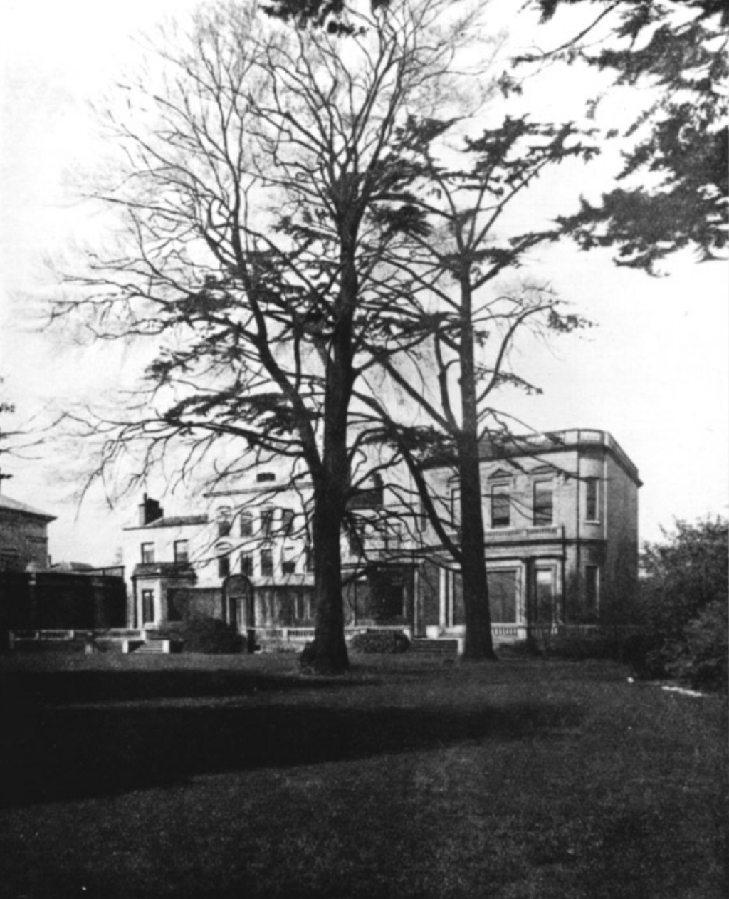

Isobel Falconer, Henry Cavendish: the man and the measurement (s.475)

Şekil 1: Cavendish'in Clapham Common'da, şimdi yıkılmış olan evi. Ev, bazı sonradan eklenen yerler ile arkadan görünmektedir. Efsaneye göre, Cavendish deneyi bu bahçede bir kulübenin içinde yapmıştır. (Resmin kaynağı, Isobel Falconer, 1999)
Cavendish'in analizinde açıkça belirtmediği Newtoncu bazı varsayımlar var onları açıklıyor Falconer.
Peki Cavendish burulmalı sarkaçta yaptığı ölçümleri dünyanın yoğunluğu ile nasıl ilişkilendirdi?
Esas olarak, burulmalı sarkacı, hayali, fakat eşdeğer olan bir basit sarkaçla mukayese etti ve böylece yerçekimi kaynaklı ivmenin değerini bilmesine gerek kalmadı. [ Yeryüzünde cisimlere ağırlıklarını veren ve küçük "g" harfi ile belritilen ama aslında Kepler Kuralı ile ilişkili bir değer. ]
Cavendish makalesinde ağırlık kelimesini kullanır kütle kavramını kullanmaz. (Cavendish 1798, s. 275-77)
Cavendish burmalı sarkacını (kolu 36.65 inch olan yarım sarkaç); kolunun uzunluğu 36.65 inch olan ve ucuna kütlesi \(W\) olan bir top asılmış olan bir basit sarkaca benzetti.
Basit (dikey) sarkacı asılı olan kütle [ Ağırlık. Bu ağırlığın sarkaç kolunun hareketinde bir etkisi var mı? Bildiğim kadar yok o zaman neden bu ağırlıktan bahsediyorlar? ] denge noktasından \(A\) açısı kadar ayrıldığı zaman, kolu dikey pozisyona geri getirmeye çalışan \(F_0\) gücü \(W \sin A\) olacaktır.
Veya, Cavendish'in yazdığı gibi söylersek, "kolu \(A\) açısı kadar çevirmek için, her topa uygulanması gereken güç ile : o topun ağırlığının oranı :: \(A\)'nın yayının : yarıçapa olan oranına eşittir. (Cavendish, s.276)
Bu basit sarkacın dönemi \(T_0\); \(T_0^2 = 36.65 / 39.14 s^2\) ifadesine eşittir. Burada, 39.14 inch, Cavendish'in deneyi yaptığı yerde salınan bir saniye sarkacının kolunun uzunluğudur. (Cavendish "bu iklimde" diyor.)
Bundan sonra Cavendish, telinin sertliği bilinmeyen bu burulmalı sarkaca etki eden ve sarkaç kolunu, denge noktasından, \(A\) açısı kadar ayıran gerçek güç \(F\)'nin değerini bulmak istedi.
Bunu da Newton'un bulduğu sarkaçla ilgili bir özelliği kullanarak yaptı. Newton, basit harmonik salınım hareketinde, geri getirici gücün dönemin karesine orantılı olduğunu bulmuştu.
Bu da,
\begin{equation*} F = \frac{F_0\;T_0^2}{N^2} \end{equation*}ifadesi ile veriliyor. Bu ifadede \(N\) burulmalı sarkacın gözlemlenen dönemini ifade ediyor.
\(F_0\) ve \(T_0\) için daha önce önce yazdığımız değerleri bu ifadeye aktarıyoruz.
Cavendish'in sözleri ile: "Sarkacın kolunu \(A\) açısı kadar döndürmek için her topa uygulanması gereken gücün : topun ağırlığına oranı :: \(A \; \times 1/N^2 \times 36,65\; /\; 39,14\)'ün yayının : yarıçapa oranına eşittir.
(Cavendish ondalıkları ayırmak için virgül kullandı bendi onun yazdıklarını aktarırken virgül kullandım.)
Cavendish'in sarkacının boyutları için, bu, kolun oynadığı her ölçek derecesi için güç : ağırlık oranı olarak, \(1/(818N^2):1\) oranını vermiş oluyordu.
Bundan sonra Cavendish, şimdi hesapladığımız gücü; ağırlıklar ve sarkaca asılı toplar arasında etki ederek kolu çeviren yerçekimsel çekim gücüne eşitledi.
gEk olarak, Cavendish, aynı şeyi, dünyanın yoğunluğunu suyun yoğunluğuna bağlamak için yapmak istedi.
Çapı 1 foot olan hayalî bir su küresi tanımladı.
Her kurşun ağırlık 2,439,000 grains (aşağı yukarı 150 kg) geliyordu, bu da aynı çapta bir su küresinden 10.64 kat daha fazlaydı.
Dolayısıyla, ağırlığın top üzerindeki çekim gücü \(F\),
eğer top su küresinin yüzeyinde olsaydı, su küresinin top üzerindeki çekim gücünden
\(F = 10.64 \times (6/8.85)^2\);
eğer top su küresinin yüzeyinde olsaydı,
Böyle bir saçmalık hayal ediyorlar
Eğer top bu bahsedilen su küresinin yüzeyinde olsaydı, bu su küresinin yüzeyinde bulunan top su küresi tarafından \(F = 10.64 \times (6/8.85)^2\);
Yani ağırlığın top üzerindeki çekim gücü,
ağırlığın top üzerindeki çekim gücü : su küresinin top üzerindeki çekim gücünün \(F = 10.64 \times (6/8.85)^2\); katı kadar olacaktı.
Şimdilik anlayabildiğim bu kadar.
(\(6/8.85\) çarpanı buradan geliyor, 6 inch su küresinin yarıçapı ve 8.85 inch ağırlıkla topun merkeleri arasındaki mesafe.)
Cavendish, Toplarlarla ağırlıkların tam karşılıklı olmadıklarını fark ettiği için, burada bir de değeri 0.9779 olan bir düzeltme çarpanı tanımlıyor.
Cavendish kurşun ağırlığın top üzerindeki çekim gücü ile dünyanın top üzerindeki çekim gücünün oranını, Newton'un yerçekimsel çekim gücü kuramını varsayarak, alıyor (yani \(F/W\)), fakat bu varsayımını açıklamıyor.
Açıklamadığı adımlar şunlar:
\begin{align*} \frac{F}{W} = 10.64 \times 0.9779 \times (6/8.85)^2\\ \\ &\times (\text{su küresinin ağırlığı} / \text{kürenin yarıçapı}^2)\\ \\ &\times (\text{dünyanın yarıçapı}^2 / \text{dünyanın ağırlığı}) = 10.64\\ \\ &\times 0.9779 \times (6/8.85)^2\; (D_w \; d_w^3 / d_w^2) \; [d_e^2 / (D_e\; d_e^3)] \end{align*}Burada,
\(D_w\) = suyun yoğunluğu
\(d_w\) = su küresinin çapı (=1 foot)
\(D_e\) = dünyanın yoğunluğu
\(d_e\) = dünyanın çapı (feet olarak).
Bu ifadede sabit terimler eleniyor.
Veya Cavendish'in dediği gibi:
"kurşun ağırlığın top üzerindeki çekimi : dünyanın top üzerindeki çekimine :: \(10,64 \times ,9779 \times (6/8,85)^2\) ifadesinin : \(41 800 000\;D\) oranı gibi olacaktır." (Cavendish, s.276)
Burada,
41 800 000 feet = dünyanın çapı
$D (=De/Dw) = dünyanın yoğunluğunun suyun yoğunluğu birim alınmış olarak ifadesi, yani \(F:W = 1 : 8 739 000\; D\)
\(F/W\) için tanımladığı iki ifadeyi eşitleyerek Cavendish \(1:8 739 000 \;D = B/(818\;N^2):1\) değerini buldu.
Bu ifadede \(B\) kolun oynadığı ölçek derecelerini ifade ediyor, böylece dünyanın yoğunlu için $D = 818N2/(8 739 000 B) değerini bulmuş oluyor.
\(* * *\)
Bu yöntemin daha modern bir analizi şöyle:
Şu terimleri tanımlayalım:
\(2a\) = burgulu sarkacın kolunun uzunluğu
\(m\) = sarkaca asılı topun kütlesi
\(M\) = Ağırlık dediğimiz büyük kurşun topun kütlesi
\(d\) = Ağırlıkla topun merkezleri arasındaki mesafe (sarkacın iki tarafında da aynı)
Ağırlıklar topların bir tarafından diğer tarafına taşındıklarında, sarkaç kolu \(\theta\) açısı kadar oynamış oluyor, buna göre,
\begin{equation*} \mu \; \theta = 4 \;G \;M\; m\; a / d^2 \end{equation*}ifadesini elde ediyoruz.
Burada \(\mu\\) teli 1 radian döndüren tel sertliği ve burulmalı sarkacın dönemi \(T\)'den ve hesaplanan eylemsizlik momenti \(I\)'dan \(\mu = 4 \pi^2 I / T^2\) ifadesi ile bulunabilir.
Sonra,
\begin{equation*} G = g\;r^2 \;/ \; M_e \end{equation*}dünyanın yoğunlğunu hesaplayabiliriz.
\(g\) = yerçekimsel çekimin sonucu olan ivme
\(r\) = dünyanın yarıçapı
\(M_e\) = dünyanın kütlesi
Şimdi, \(g\)'yi bir saniye sarkacının kolu \(L\) ile tanımlayarak dünyanın yoğunluğu \(\Delta\)'yı bulabiliriz:
\begin{equation*} \Delta = [3\;/\; (4\pi\;r)] \; L \; M\; m \; a \; T^2 \;/\; (d^2 \; I \; \theta) \end{equation*}